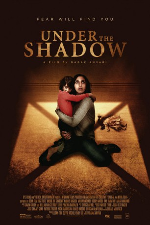

#5325 Under the Shadow
 
 IMDB-Wertung: 7.0 / 10
IMDB-Wertung: 7.0 / 10  Tomatometer: 99
Tomatometer: 99  Metascore: 0
Metascore: 0 
Im Jahr 1988 befindet sich der Iran mit dem Irak im Krieg und Shideh (Narges Rashidi) muss alleine ihre Tochter großziehen. Doch je weiter die Kämpfe voranschreiten, desto stärker droht sie dem Wahnsinn zu verfallen. Als dann auch noch eine Rakete in ihr Haus einschlägt, jedoch nicht explodiert, ist sie davon überzeugt, dass sie verflucht ist mit bösen Geistern.
WEBHDRIP
Jahr: 2016
Dauer: 81 Minuten
FSK:
Land: England Studio: Front Row Filmed EntertainmentTonspuren:
Untertitel:
Auflösung: 1080p (1920x816) Größe: 2539 MB
Genre: Horror
Regisseur: Babak Anvari
Drehbuch: Fabrice Du Welz
Soundtrack:
Darsteller:
 Narges Rashidi als Shideh
Narges Rashidi als Shideh- Avin Manshadi als Dorsa
- Bobby Naderi als Iraj
- Ray Haratian als Mr. Ebrahimi
- Arash Marandi als Dr. Reza
 Bijan Daneshmand als Director
Bijan Daneshmand als Director- Sajjad Delafrooz als Secretary
- Behi Djanati Atai als Pargol
- Hamid Djavadan als Mr. Fakur
- Soussan Farrokhnia als Mrs. Fakur
- Aram Ghasemy als Mrs. Ebrahimi
- Nabil Koni als Mr. Bijari
- Amir Ranjbar als Young Soldier
Datei: X:\2016(N-Z)\Under the Shadow (2016, FSK, 1920x816).mkv seit 12.01.2017
Festplatte: HD 2016(A-Z)
 Es gibt insgesamt 182 Filme in der Gruppe '2016(N-Z)'
Es gibt insgesamt 182 Filme in der Gruppe '2016(N-Z)'